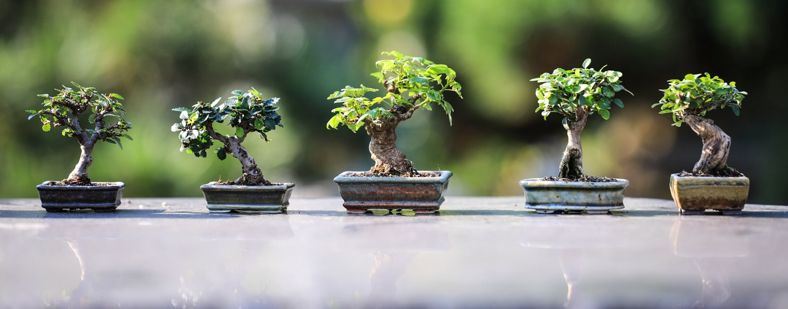

Divine Bonsai

Growing a bonsai tree from seed is a very long yet
satisfying process. There are many places to begin, so we
offer beginner friendly advice with every seed.
We carry a variety of seeds to grow! from the ever poplar
Juniper to colerful Cherry Blossoms! We reccommend taking a
look at our sapplings in order to practice your from while
your tree grows.
Sign up for our newsletter! Get all of the latest news and trends
happenning within the community.
Bonsai of the week!
This weeks winner is Kevin Halter from Denver, CO.
Send in pictures of your tree's and YOU could end up on our
Home Page! Go to Contact Information for more information.